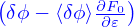
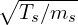
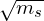

A general conservation law for a scalar quantity K can be written as
| (287) |
where S is a source term, and Q is the flux, which can often be divided into two terms: the diffusive term and convective term, i.e.,
| (288) |
where χ is called the diffusivity, u is the flow velocity that transports K.
[If u = 0 and χ is constant, then Eq. (287) without the source term reduces to the following parabolic equation:
| (289) |
which is often called diffusion equation.]
Next, let us neglect the convection, i.e., set u = 0. For the case of energy diffusion, K is the kinetic energy density, i.e., K = 3nsTs∕2, where ns is the number density and Ts is the temperature. Assuming that n is constant in space, then the diffusivity χ in Eq. (288) can be written as
| (290) |
In studying tokamak energy transport, it is the radial component that is of interest. The energy radial diffusivity (or conductivity) χ is defined as
| (291) |
where ⟨…⟩ is the flux-surface average, and Q is the radial energy flux defined by
| (292) |
where μ = mv⊥2∕(2B0), VG0 is the equilibrium drift, VG1 is the drift perturbation, δf is the distribution function perturbation. The flux contributed by the equilibrium drift (i.e., linear flux) is usually small and neglected [The equilibrium drift has only n = 0 component. The fulx-surface averaging will make all the n≠0 δf components multiplied by the equilibrium be zero. Only n = 0 component (zonal component) of δf, multiplied by the equilibrium drift can give nonzero flux. For this flux to be significant, the zonal component usually needs to be very strong.]
The perturbed distribution function contains a term:

, i.e., the polarization term. This term’s contribution to the heat flux is usually small and is ignored (confirmed by Ye Lei).Equation (291) indicates that the unit of χ in SI units is m2∕s.
For a species s, the gyro-Bohm energy diffusivity is defined by
| (293) |
whereas the Bohm diffusivity is defined by
| (294) |
where s is the species label, cs =

is the thermal speed, ρs = cs∕Ωs is the thermal Larmor radius, Ωs = Bqs∕ms is the cyclotron frequency, Ls is the radial gradient scale length of temperature or density of species s. Because Ls evolves in δf gyrokinetic simulations without source terms, some autors prefer to replace Ls in the above definition by the minor radius of the LCFS, a.Comparing Eqs. (293) and (294), we know that the Bohm diffusivity is Ls∕ρs times larger than the gyroBohm one. The energy diffusitivity observed in gyrokinetic simulations usuall is much samller than χB and is often of the same order of χGB.
The Bohm diffusitivity can also be written as:
| (295) |
which is independent of the machine size, and the gyro-Bohm diffusitivity can be written as
| (296) |
where Ls is replaced by the minor radius of the LCFS, a. The gyro-Bohm diffusitivity decreases with increasing machine size. The gyro-Bohm diffusivity is proportional to

, which means heavier isotops have larger diffusivity if the satisfy the gyro-Bohm scaling.